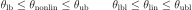
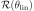
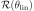
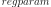
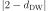

Fitting Guide#
This guide will focus on the last step of the DeerLab workflow, i.e., the fitting. Due to the separation of non-linear parameters  and linear parameters
and linear parameters  in the model structure of DeerLab, the program can use penalized separable non-linear least-squares to fit the model to the data. The fitting procedure aims to find the following optimization problem with the objective function
in the model structure of DeerLab, the program can use penalized separable non-linear least-squares to fit the model to the data. The fitting procedure aims to find the following optimization problem with the objective function

with the linear part of the objective given by

and all subject to the boundary conditions defined in the model

The term  is the non-linear function of the model. A regularization penalty  weighted by a regularization weight or parameter
is the non-linear function of the model. A regularization penalty  weighted by a regularization weight or parameter  , and multiple additional arbitrary penalty terms
, and multiple additional arbitrary penalty terms  each weighted by its own penalty weight
each weighted by its own penalty weight  , can be added to this objective function if wanted
, can be added to this objective function if wanted
The fit function#
DeerLab provides a centralized fitting function called fit. Its syntax is generally straightforward, taking a dataset and a model to be fitted to it. The function will always return a FitResult object containing all of the fitted quantities, including uncertainty estimates, as well as other quantities of interest. Assume that we have some dataset y described by some model called model. The fit can be executed as follows
# Fit the model to the data
result = dl.fit(model, y)
If the model has parameters without assigned start values, the fit function will return an error and request them to be specified. They can be passed via the par0 keyword argument passing the start values as a list
# Fit the model to the data with other start values
result = dl.fit(model, y, par0=par0_list)
However, the list must be ordered according to the model parameter ordering. Therefore, we recommend specifying the start values on the model (as shown here).
Specifying the noise level(s)#
The fit function (and other functions in the pipeline) employ the noise level of the dataset(s), i.e. the standard deviation of the white Gaussian noise superimposed on the data, at various stages of the model optimization and uncertainty estimation. Therefore, the analysis profits strongly from accurate estimates of the noise level(s). These can be specified via the noiselvl keyword argument of the fit function
y = yclean + dl.whitegaussnoise(x, 0.05)
# Fit the model (with two constants) to the data
result = dl.fit(model, y, constant1, constant2, noiselvl=0.05)
IF not specified, the program will estimate it from the dataset(s) directly using the deerlab.noiselevel function. While, these estimates can be relatively accurate, it is better to specify the noise level if a trusted estimate is known.
Fitting models with constants#
Models with constants (see here for details) can be fitted as shown above, with the added requirement that the constants must be specified as well when calling fit. Constants can be specified after the data as positional arguments
# Fit the model (with two constants) to the data
result = dl.fit(model, y, constant1, constant2)
Fitting multi-dataset models#
Models merged using the merge function (see here for details) can describe multiple datasets with a single model object and a common parameter set. To fit such a merged model to multiple datasets, the fit function can be used as above by passing a list of datasets [y1,y2,...,yN] instead of a single dataset
# Fit the model to multiple datasets
result = dl.fit(model, [y1,y2,y3])
The number of datasets must match the number of responses returned by the model. Additionally, the ordering in the list of datasets must match the order of responses from the model, i.e. response1 of model will be fitted to y1, and so on.
Adding regularization#
DeerLab includes the possibility to impose (Tikhonov) regularization based on the smoothness of the linear parameters in the model. By default, DeerLab will automatically check the condition number of the matrix returned by the non-linear part of the model and determine whether it is well-conditioned or not. If the matrix is ill-conditioned, the program will automatically enforce regularization upon the linear parameters.
Regularization can be manually be switched on/off via the reg param
# Enforce regularization
result = dl.fit(model, y, reg=True)
# Disable regularization
result = dl.fit(model, y, reg=False)
The regularization penalty weight (a.k.a regularization parameter) is optimally selected according to a given criterion (by default, the Akaike information criterion, AIC). There are different ways to control this process:
Changing the selection functional#
The regularization functional can be changed from the AIC to any built-in functionals via the  keyword argument. Changing it to another functional will only change how the regularization parameter is selected, but it still will be optimized. For example, to switch the selection functional from the AIC to generalized cross-validation (GCV)
# Fit the model to the data, using the GCV criterion
result = dl.fit(model,y, regparam='gcv')
A list of the available selection functionals and their string names are given in the reference for fit.
Changing the optimization range#
When using selection functionals to optimize the regularization weights, a Brent-like algorithm searches the value that minimizes the given selection functional within a specific range. This range can be manually specified via the regparamrange keyword argument. It must be passed as a two-element list [regparam_lb, regparam_ub] with the search boundaries
# Fit the model to the data, with a constrained regparam search range
result = dl.fit(model,y, regparamrange=[1e-5,1e-1])
This can be useful for avoiding unwanted local minima of the selection functional causing potential under- or oversmoothing.
Manual specification#
The value of the regularization penalty weight can also be manually specified and fixed to a value for the whole optimization. This can be done via the aforementioned regparam keyword argument by specifying a value instead of a selection functional
# Fit the model to the data, using a fixed regularization weight
result = dl.fit(model,y, regparam=0.05)
Adding penalties#
DeerLab provides a flexible system for defining and adding penalties to the objective function of the fit function in the form of the Penalty objects, which can be passed to the penalties keyword argument of the fit function
# Fit the model to the data with an additional penalty
result = dl.fit(model,y penalties=penalty)
Penalties are only added to the non-linear part of the separable non-linear least-squares objective function used in fit. For the linear part, only Tikhonov regularization can be imposed (see the previous section).
DeerLab’s penalties consist of the following components:
- Penalty function
The penalty function takes model parameters and returns a vector of values that are appended to the least-squares residual. The function should ideally be convex, monotonically increasing, and defined everywhere. It can be freely constructed and defined.
- Penalty weight
As its name indicates, the penalty weight balances the influence of the penalty with respect to the other terms in the objective function. It is treated similarly to model parameters, meaning that it has boundaries defined that can be manipulated freely.
- Selection functional
The selection criterion desired for the optimized choice of penalty weight. Must be chosen from a collection of selection functionals.
Constructing a penalty#
Penalties can be constructed in a similar way to how models are constructed. Since penalties depend on a model’s parameters, and by extension, are specific for a given model, it is recommended to construct penalties after the model has been entirely constructed.
The first step is to construct the penalty function. First, it must be a callable function taking a series of positional arguments. The names of the arguments must match the names of the model parameters that the penalty depends on. Second, the function must return a vector, taking the following into account:
The vector cannot change length/shape for different parameter combinations.
The program will internally compute the squared values and append the vector to the residual vector.
The penalty weight must not be included in the penalty function definition. It is accounted for internally upon constructing the penalty.
Third, a selection functional for the optimal selection of the penalty weight must be chosen from a list of built-in functionals:
Informational complexity criterion (
icc)Akaike information criterion (
aic)Bayesian information criterion (
bic)Corrected Akaike information criterion (
aicc)
Last, the penalty can be constructed using the Penalty() constructor passing the penalty function and selection functional
# Define the penalty function
def penalty_fcn(param1,param2,param3):
# compute something...
return penalty_vector
penaltyobj = dl.Penalty(penalty_fcn,'aic')
Upon constructing the penalty, the penalty weight is introduced in the background. This can be accessed via the <Penalty>.weight attribute. The weight attribute is a Parameter object similar in behavior to model parameters, with the difference that it has no linear or par0 attributes. Otherwise, its boundaries and other descriptors can be freely modified.
# Set boundaries for the penalty weight
penaltyobj.weight.set(lb=1e-5, ub=1e-1)
# Set a new description for the penalty weight
penaltyobj.weight.desciption = 'A penalty weight'
Example: Gaussian smoothness penalty#
In this example, let us construct a penalty that imposes the smoothness of a Gaussian function. As a model, we will take the gauss model defined in another example. The function has to penalize roughness for imposing smoothness, which can be quantified by a discrete differential operator of second order (which we can generate using DeerLab’s regoperator). As a selection criterion, we will use the AIC functional.
# Differential operator of second order
L = dl.regoperator(x,2)
# Define the penalty function
def smoothness_fcn(center,std):
gaussian = gauss(center,std)
penalty_vector = L@gaussian
return penalty_vector
# Construct the penalty
smoothness = dl.Penalty(smoothness_fcn,'aic')
# Fit the model to the data with a smoothness penalty
result = dl.fit(gauss,y penalties=smoothness)
Manually setting the penalty weight#
By default, the program will use the specified selection functional to optimize the value of the penalty weights in an outer optimization approach. The search range of this optimization routine is given by the boundaries [weight.lb, weight.ub] of the penalty weight. However, the penalty weight can be fixed to a specific value using the freeze method of the weight attribute
# Use a fixed penalty weight
penaltyobj.weight.freeze(0.05)
# Fit the model to the data
result = dl.fit(gauss,y penalties=penaltyobj)
This will fix the value throughout the whole fitting approach and skip the outer optimization entirely (if no other penalties are passed).
Examining the results#
A summary of the fit can be accessed by printing the FitResult object as returned by the fit function
>>>print(result)
Goodness-of-fit:
========= ============= ============ ==================== =======
Dataset Noise level Reduced 𝛘2 Residual autocorr. RMSD
========= ============= ============ ==================== =======
#1 0.049 1.058 0.127 0.050
========= ============= ============ ==================== =======
Model parameters:
=========== ======= ========================= ======= ================
Parameter Value 95%-Confidence interval Units Description
=========== ======= ========================= ======= ================
center 5.002 (4.995,5.010) None None
std 0.204 (0.196,0.212) None None
scale 0.999 (0.999,0.999) None Scaling factor
=========== ======= ========================= ======= ================
The FitResult object#
Once the fitting routine is finished, the fit function will return a FitResult object containing multiple quantities of interest.
- Estimated parameters (
FitResult.<param>) The
FitResultwill contain an attribute<param>of the same name as each parameter in the model. This will be the estimated maximum likelihood estimator of the model parameter for the given data and penalties.- Estimated parameter uncertainty (
FitResult.<param>Uncert) The
FitResultwill contain an attribute<param>Uncertof the same name as each parameter in the model. This will contain the full uncertainty estimate of the parameter in the form of anUQResultobject (see here for details).- Estimated model response (
FitResult.model) It is the maximum likelihood estimate of the model’s response. It can be computed as well from the model and the fitted parameter values.
- Statistical descriptors (
FitResult.stats) A dictionary of statistical quantities such as reduced chi-square, RMSD or AIC values quantifying the goodness-of-fit and model complexity. The reduced chi-square statistic
FitResult.stats['chi2red']allows the assessment of whether the fit describes the data or not. A comparable value to 1 will indicate a good fit of the input data. The AICFitResult.stats['aic']and other information-based quantities allow the comparison between fits based on alternate models and selecting the most appropriate model.- Penalty and regularization weights (
FitResult.regparamandFitResult.penweights) Contain the regularization and penalty values used to find the maximum likelihood estimator.
The fit of the model to the data can be quickly assessed by calling the FitResult.plot() method. Since the FitResult has not
information on the abscissa values of the data, these must be specified separately. Similarly, we can also specify a label for the abscissa.
# Plot the data and fit
result.plot(axis=x, xlabel='x')
{kind=link}
Assessing the goodness-of-fit#
The results summary shown above contains several key quantities to quickly assess whether the model estimate obtained by the fit
function is a proper descriptor of the data. For each dataset analyzed, several quantities are returned. The Noise level value shows
either the estimated noise level of that dataset or the one specified by the user. The Reduced 𝛘2 value indicates how good the model fit
describes the data. Values close to one indicate a good fit of the data. The Residual autocorr. value (computed as ,
where  is the Durbin–Watson statistic) indicates the degree of (first-order) autocorrelation in the fit residual. Values larger than 0.5
indicate a significant amount of autocorrelation, meaning that either the noise if not independent or that the model might not have fully captured all
features in the data. The
is the Durbin–Watson statistic) indicates the degree of (first-order) autocorrelation in the fit residual. Values larger than 0.5
indicate a significant amount of autocorrelation, meaning that either the noise if not independent or that the model might not have fully captured all
features in the data. The RMSD value does not provide any insight by itself, however, it can be used to compare the goodness-of-fit between different models.
To facilitate the inspection of the goodness-of-fit, DeerLab will highlight with colors those values that indicate a potential failure of the analysis.
If either or both the Reduced 𝛘2 or Residual autocorr. values are highlighted in yellow, this indicates that there is the significant possibility
that the model does not properly describe the data. If these values are shown in red, it will indicate that the model does not properly describe the data.
If yellow or red goodness-of-fit quantities are obtained after an analysis, the following steps can be taken to amend that:
Check for outliers or features in the data not accounted for by the model.
Expand the model to account for them or approximate their presence.
If the model cannot be expanded to account for them, make use of the
fitfunction’smasksoptional argument to specify data masks so that those features are not accounted for during the analysis.
Complementary, the goodness-of-fit can be assessed visually by calling the plot(gof=True) method of the FitResult object.
# Plot the data, fit, and other goodness-of-fit tests
result.plot(axis=x, xlabel='x', gof=True)

By doing so, several plots will be added to the previous figure. The first plot shows the data and the model fit (along its 95% confidence intervals). The second panel shows the residual values of the model fit. These values should resemble white noise, i.e. have constant variance and mean zero. The mean value of the residual is shown as a solid line. The estimated noise level (standard deviation) of the residual is shown as dashed lines. The third panel shows an histogram of the residual values. The residuals should be normally distributed. To assess this, the standard normal distribution is shown as a shaded grey area. Ideally, both the histogram and shaded distributed should overlap nicely, indicating normally distributed residuals. The last panel shows an autocorrelogram of the residuals and the grey shaded area represents the confidence region that would be expected of a purely random vector. Ideally, all autocorrelations at lags larger than 1 should be withing the shaded grey area. Any autocorrelations outside the grey shaded area can be considered as a potential autocorrelation in the data.
Evaluating and propagating from the results#
The FitResult object provides commodity methods evaluate and propagate to quickly evaluate other models that might depend on the fitted parameters and propagate the uncertainty in the parameter estimates to those models. To evaluate a model modelB that shares parameters with modelA (which has been fitted), we can use the evaluate method
# Fit modelA to the data
fitresult = dl.fit(modelA,y)
# Evaluate modelB at the fitted parameters
responseB = fitresult.evaluate(modelB)
Similarly, to propagate the uncertainty from the fitted parameters to modelB we can use the propagate method. This method takes additionally the optional keyword arguments lb and ub to specify any boundaries on the response responseB of modelB
# Fit modelA to the data
fitresult = dl.fit(modelA,y)
# Propagate the uncertainty to responseB (responseB is non-negative)
responseBUncert = fitresult.propagate(modelB, lb=np.zeros_like(responseB))
If modelB has any constants defined in the model, these must be specified as positional arguments after the model for both evaluate and propagate
# Fit modelA to the data
fitresult = dl.fit(modelA,y)
# Evaluate model with two constants
responseB = fitresult.evaluate(modelB, constant1, constant2)
# Propagate the uncertainty to model with two constants
responseBUncert = fitresult.propagate(modelB, constant1, constant2)
Note that for evaluate and propagate to work, all the parameters of modelB must be contained in the FitResult object.